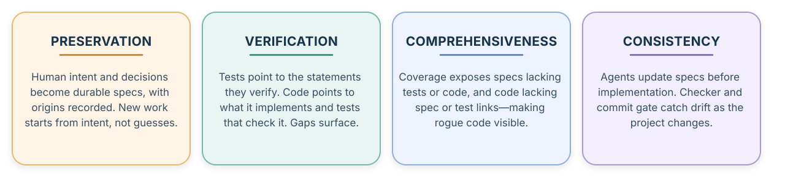
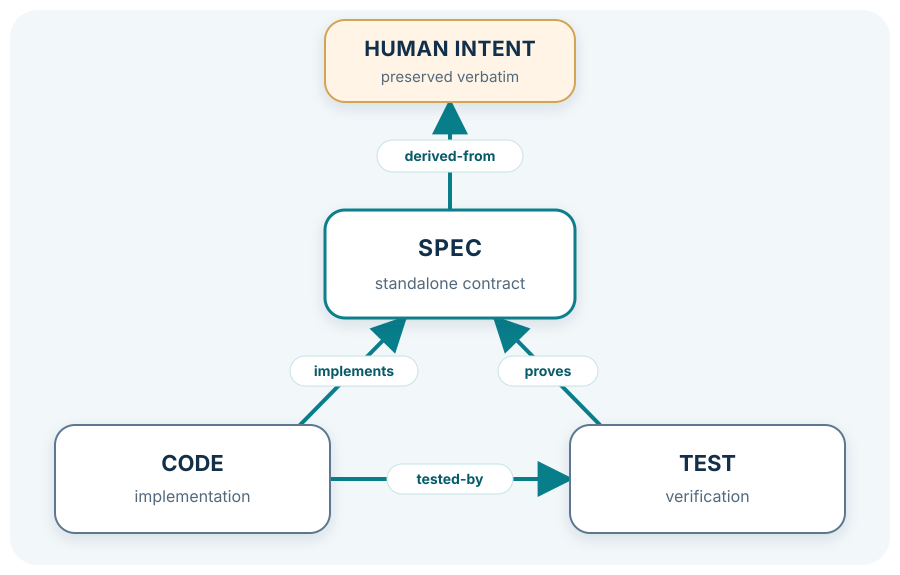

Why Concord
Four pillars that keep agent-built projects coherent.
Keep human intent, evidence, implementation, and change aligned as a project grows.

Built for big projects
Grow beyond the context window.
A model's context window is temporary. A project's motives, specifications, tests, links, and commit gate are durable. Concord gives each new agent a way to recover the important decisions, see what evidence supports them, and continue without rebuilding the project from a chat transcript.
That is how a project can grow beyond a convincing demo: keep intent, proof, and implementation connected as teams, packages, and codebases grow.
Bringing Concord to an existing project
Pay down old technical debt once.
Retroactively adopting Concord is recommended. The conversion can take substantial work: a mature codebase may contain conflicting specifications, inconsistent behavior, and gaps in test coverage.
Treat that effort as the cost of paying down the project's existing technical debt. As the contract, tests, and code are reconciled, the project gains a reliable foundation for future changes.
The Concord model
One connected account of what the software should do.
Regardless of the impetus for a change—a new feature, a bug, or something else—an agent can find a relevant starting point and follow the relationships to the information needed to keep the system specified, consistent, and tested.

Specifications stand alone. Test units and code regions point to the specification statements they support; each code region also points to the specific test unit that verifies it.
| Artifact | Points to | Purpose |
|---|---|---|
| Specification | Nothing outside the spec set | Defines the contract without depending on today's file layout. |
| Test unit | Specification statements | A parsed test call names the statements it proves or guards. |
| Code region | Specification statements and test units | Names what it implements and the specific test call that verifies it. |